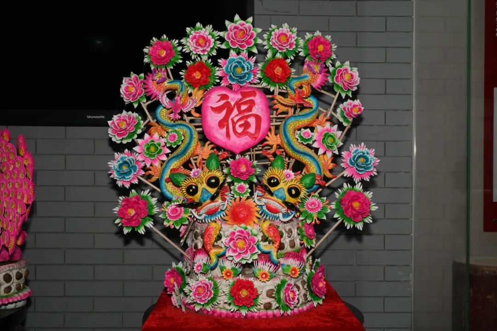
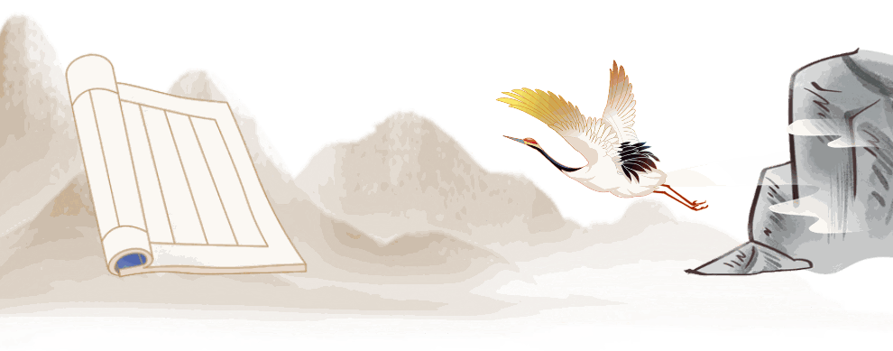
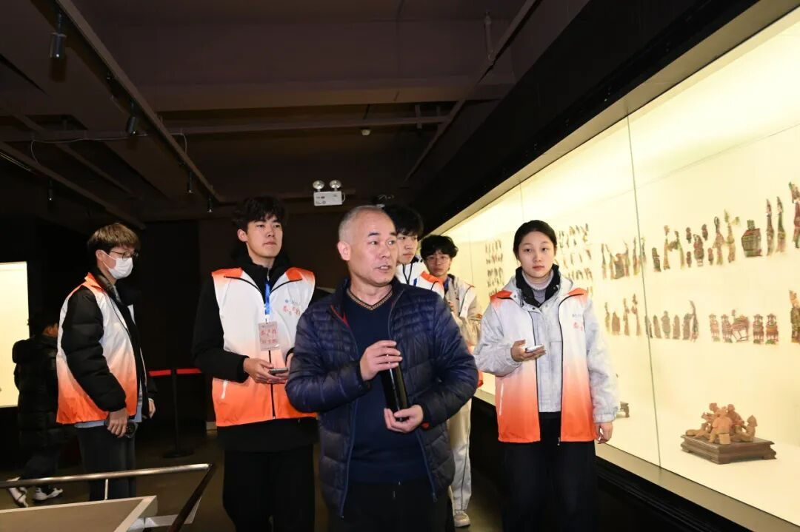
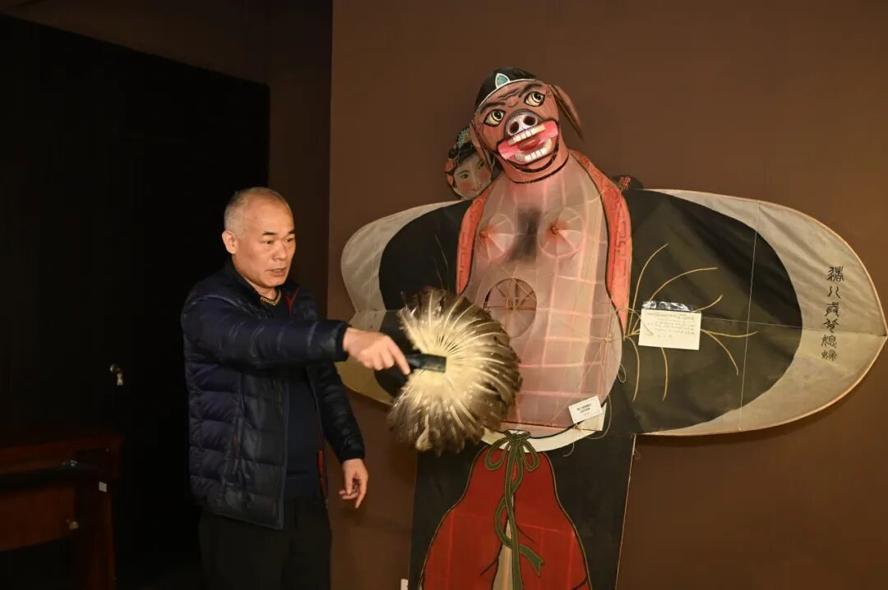
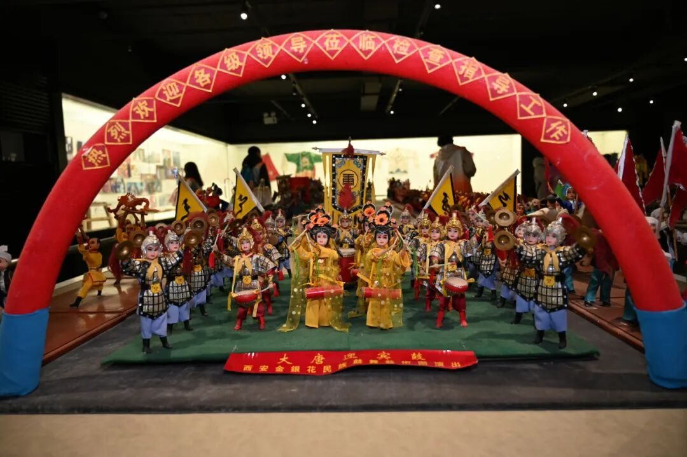
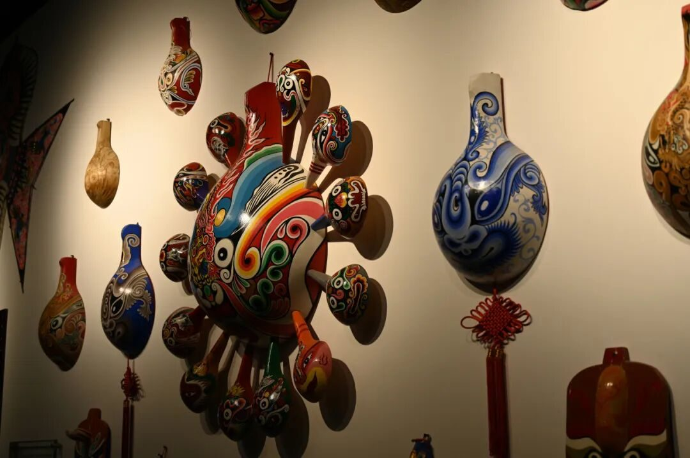
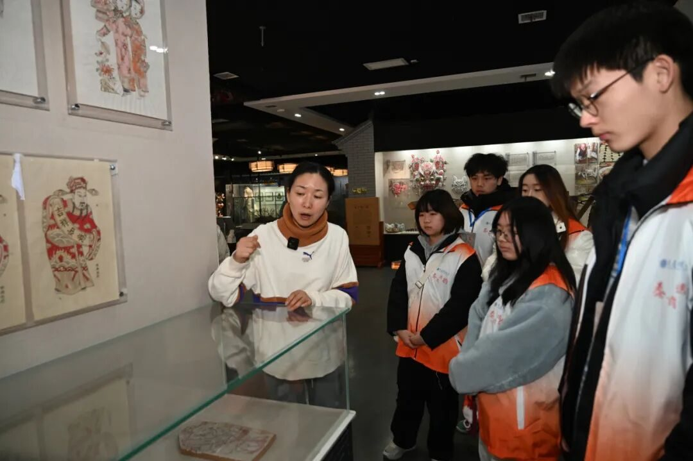
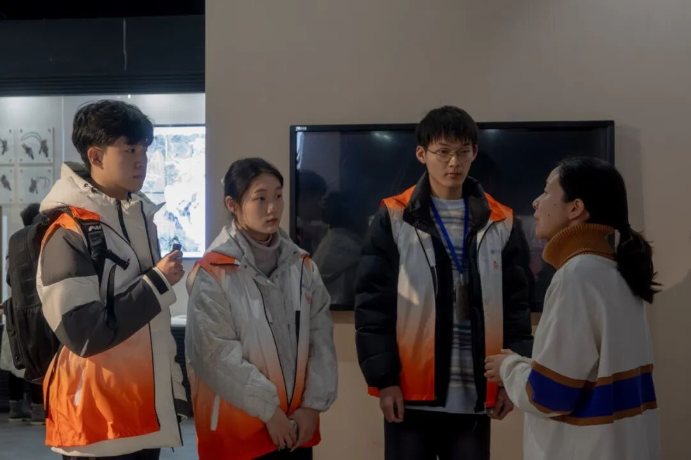

【行者无疆·秦育遗韵】三秦大地，探源非遗遗珠


三秦大地
探源非遗遗珠



吉光片羽，镂月裁云

晨光微洒，行者的脚步轻快迈进西安非物质文化遗产博物馆 。一进展厅，一股浓郁的文化气息扑面而来。皮影区域，那薄如蝉翼的皮质上，细腻的线条勾勒出形态各异的人物，只需想象，它们在灯光下便能演绎出千年的悲欢离合。泥塑作品或圆润可爱，或古朴厚重，每一尊都像是在静静诉说着古老的故事。


当行者们与这些文化珍宝相逢，眼中仿若有璀璨星辰闪烁，内心满溢着敬畏之情，恰似面对千年历史的深情凝望……
郢匠挥斤，黼黻文章

下午，行者们走进陕西省非物质文化遗产陈列馆。馆内，青龙白虎幛庄严肃穆，神秘的色彩与独特的图案，瞬间将人拉回古老的岁月，让人感受到传统文化中对神兽的敬畏。库淑兰剪纸独树一帜，大胆明艳的色彩搭配，复杂精巧的图案，呈现出民间艺术蓬勃的生命力……


在为团队成员们细致讲解后，陈亚平老师谈到：“非遗 + 教育”是一场影响深远的文化实践，非遗不只是历史的见证，更是充满活力的教育资源。将非遗融入教育，是对全面发展理念的生动践行，而通过教育传递非遗中的文化基因，也能增强民族认同与凝聚力。

简言意赅，让非遗走进教育，就是为文化传承与创新发展注入源头活水 。
通过一天的参观，我们深切感受到非遗不仅仅是一件件展品，更是先辈们智慧的结晶，承载着历史的厚重与文化的传承。在现代社会的浪潮中，这些非遗瑰宝愈发珍贵，它们是连接过去与未来的桥梁。希望能有越来越多的人投身到非遗保护中，让这些珍贵的文化遗产在岁月长河中永远闪耀光芒。

来源 | 行者无疆实践团
图片 | 梁棋鑫 樊星烁
文字 | 李凌志
编辑 | 李麟凤
审核 | 范伊诺 李凌志
责编 | 邹靓靓